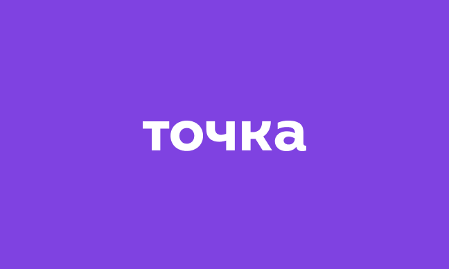

О проекте
«Точка» — российский онлайн-банк без физических офисов, ориентированный на дистанционное обслуживание предпринимателей и малого и среднего бизнеса.
Задача
В рамках креативной компании «Метафорические карты» Точка Банк решил создать телеграм-бота, в котором пользователи могут получать карты с предсказаниями. Нужно было составить небольшой CJM, чтобы понять логику работы и путь пользователя внутри бота. Сценария два:
- Человек может сам сканировать карту на упаковке
- Бот сам присылает человеку карту недели
CJM

Следующий кейс